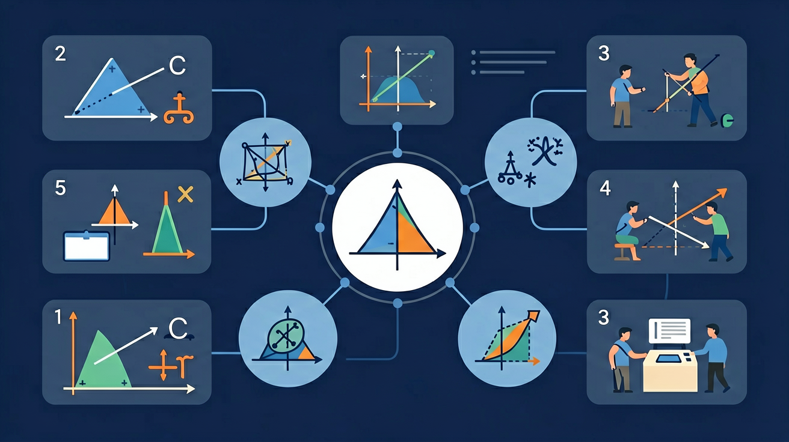

探索直角三角形三边之间的神奇关系

🎯 能说出直角三角形三边名称及关系式
🎯 能判断给定三边长度是否满足勾股定理
🎯 能计算直角三角形任意一边的未知长度
❓ 为啥斜边非得叫'斜边'？不能叫长边吗？
❓ 这个定理买菜能打折吗？
❓ 如果三角形长得歪一点，这定理还管用吗？
学完这一课，这些问题你都能自信地回答。
直角三角形中，直角对的边叫？
下列哪组数可构成直角三角形？
直角三角形两直角边的平方和等于斜边的平方：a² + b² = c²。它的逆定理可用来判断一个三角形是否为直角三角形。常见勾股数有 3、4、5 与 5、12、13 及其整数倍。
斜边是最长边、直角的对边。求直角边用 c²−a²；实际问题（梯子、旗杆、航行）先画直角三角形模型再计算。
常见误区：常见误区是把已知的最长边当成直角边，或对非直角三角形误用勾股定理。
三边为 5、12、13 的三角形是？
直角三角形两直角边分别为 6 和 8，斜边长为？
And：学生已学过三角形边长关系
But：但不知道直角三角形三边的定量关系
Therefore：揭示直角三角形的隐藏规律
当三角形有个直角时，两直角边平方和等于斜边平方。比如：直角边3cm和4cm，斜边就是5cm，因为3²+4²=5²（9+16=25）。这个规律对所有直角三角形都成立，就像数学界的指纹密码。
🌍 工人师傅用3米、4米的木条固定墙角，直接量出对角线5米就能确认角度是直角，比用角尺更方便。
直角边为6cm和8cm，斜边是？
And：已掌握已知直角边求斜边
But：遇到已知斜边和一条边时不会反推
Therefore：培养逆向运用公式的能力
就像知道密码总和也能倒推缺的数字。例如：斜边13cm，一条直角边5cm，另一条边就是√(13²-5²)=√(169-25)=12cm。注意：先确认最长边是斜边！就像玩数学拼图，缺哪块就补哪块。
🌍 装修时知道电视柜对角线1.7米，深度0.8米，就能算出墙面至少留1.5米宽度（√(1.7²-0.8²)≈1.5）。
斜边25cm，直角边7cm，求另一边
And：会计算单一三角形
But：遇到组合图形就无从下手
Therefore：训练复杂问题拆解能力
复杂图形就像乐高积木，要拆成多个直角三角形。比如：梯形高12cm，上底9cm，下底16cm，可以分成矩形和直角三角形。斜腰长度=√[(16-9)²+12²]=√(49+144)=√193≈13.9cm。关键要画辅助线暴露隐藏的直角三角形。
🌍 测量操场跑道拐弯处的距离，可以拆解成多个直道+圆弧直角三角形组合计算。
长方形长8宽6，对角线与长边夹角的正弦值是？
And：会纸上计算
But：不会解决实际问题
Therefore：建立数学与现实桥梁
比如测量旗杆：站离杆底5米，测杆顶仰角45°，此时眼睛到杆顶的斜边=√(5²+5²)≈7.07米。若身高1.6米，旗杆≈1.6+5=6.6米（等腰直角三角形两直角边相等）。要特别注意建立正确的数学模型，把实际问题转化成直角三角形问题。
🌍 台风天判断树木是否会砸到房子：测量树高（投影法）和树房距离，用勾股定理计算倒伏范围。
电线杆拉线锚点距杆底3米，拉线长5米，求固定点高度
开放任务：用三步写出你如何向同学讲清「勾股定理」。
将定理拆解为'两直角边平方和'与'斜边平方'两部分
用拼图法展示a²+b²如何拼合成c²的面积
对比锐角/钝角三角形中三边平方关系差异
在校园旗杆测量中观察定理的实际应用
用定理推导坐标系中两点间距离公式
关于勾股定理的正确表述是
利用勾股定理设计测量方案，不可直接攀爬测量
💡 在直角三角形中验证 a²+b²=c²。
外链：https://phet.colorado.edu/sims/html/trig-tour/latest/trig-tour_zh_CN.html
先独立作答，再点选项查看对错与错因。
直角三角形两直角边分别为5cm和12cm，斜边长度是
下列哪组数不能构成直角三角形边长
等腰直角三角形斜边为10cm，直角边长是
直角三角形中，若一条直角边是____，另一条是15，斜边是17
答案：8
根据勾股定理：√(17²-15²)=8
梯子靠在墙上形成直角三角形，梯子长____米时，底端离墙3米，顶端可达4米高
答案：5
√(3²+4²)=5
✅ 强调斜边必对直角
💡 概念混淆
✅ 用面积模型强化平方含义
💡 符号意识薄弱
✅ 建立勾股数必须满足等式的认知
💡 机械记忆导致错误迁移
口诀：勾三股四弦必五，两短平方和等长
类比：就像折叠梯子，两边撑开的距离决定梯子长度
（中考题）直角三角形两直角边为5cm和12cm，其斜边上的高为？
（迁移题）长方形对角线长10cm，宽6cm，则长为？
（生活题）小明离旗杆底部8米，仰视旗杆顶为10米，旗杆高？
点击节点跳转到对应章节；可切换布局。